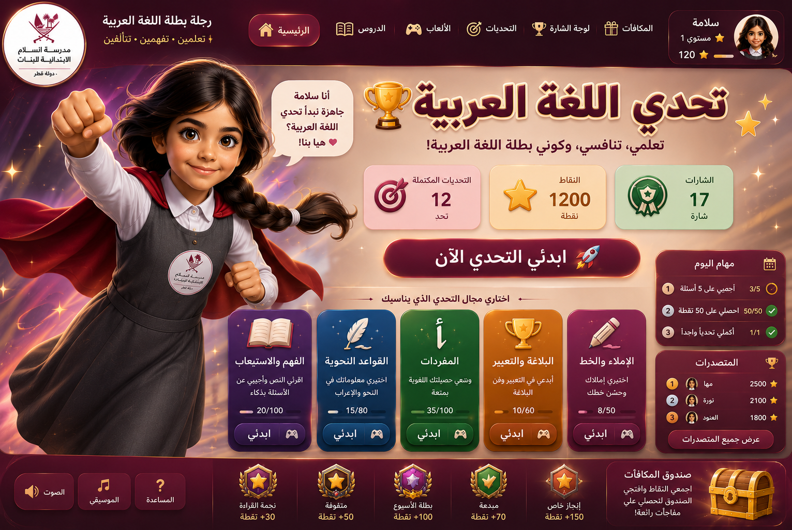

النقاط:
0
⭐ | بنك الأسئلة:
0
اضغطي على بوابات اللعبة داخل الصورة ✨ الأسئلة عشوائية ومتنوعة من محتوى الملف
تحدي اللغة العربية
اختاري الإجابة الصحيحة لتحصلي على النقاط.
فرع
سؤال
+10 نقاط
سؤال عشوائي جديد ✨
العودة للواجهة